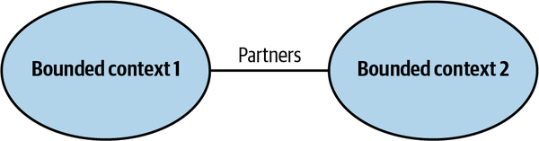
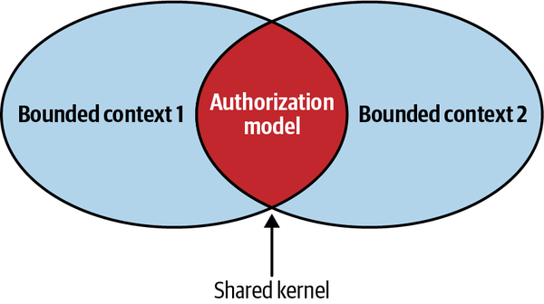
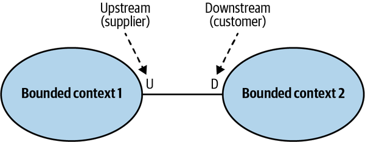
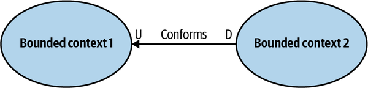
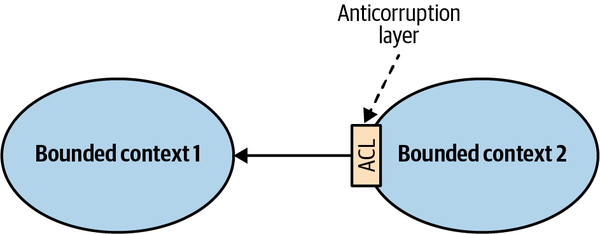
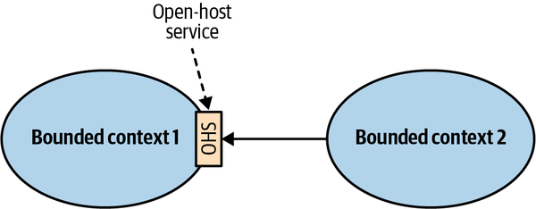
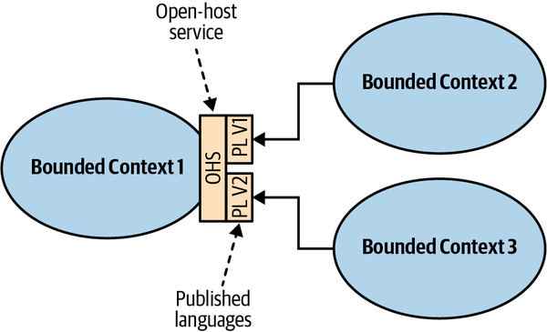
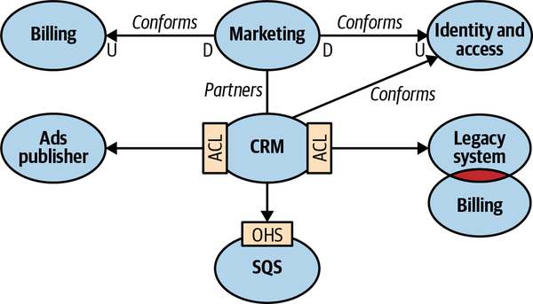
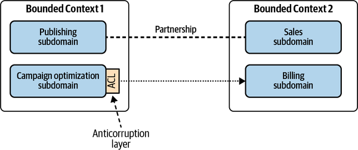

Not only does the bounded context pattern protect the consistency of a ubiquitous language, it also enables modeling. You cannot build a model without specifying its purpose—its boundary. The boundary divides the responsibility of languages. A language in one bounded context can model the business domain to solve a particular problem. Another bounded context can represent the same business entities but model them to solve a different problem.
Moreover, models in different bounded contexts can be evolved and implemented independently. That said, bounded contexts themselves are not independent. Just as a system cannot be built out of independent components—the components have to interact with one another to achieve the system’s overarching goals—so, too, do the implementations in bounded contexts. Although they can evolve independently, they have to integrate with one another. As a result, there will always be touchpoints between bounded contexts. These are called contracts.
The need for contracts results from differences in bounded contexts’ models and languages. Since each contract affects more than one party, they need to be defined and coordinated. Also, by definition, two bounded contexts are using different ubiquitous languages. Which language will be used for integration purposes? These integration concerns should be evaluated and addressed by the solution’s design.
In this chapter, you will learn about domain-driven design patterns for defining relationships and integrations between bounded contexts. These patterns are driven by the nature of collaboration between teams working on bounded contexts. We will divide the patterns into three groups, each representing a type of team collaboration: cooperation, customer–supplier, and separate ways.
Cooperation
Cooperation patterns relate to bounded contexts implemented by teams with well-established communication.
In the simplest case, these are bounded contexts implemented by a single team. This also applies to teams with dependent goals, where one team’s success depends on the success of the other, and vice versa. Again, the main criterion here is the quality of the teams’ communication and collaboration.
Let’s look at two DDD patterns suitable for cooperating teams: the partnership and shared kernel patterns.
Partnership
In the partnership model, the integration between bounded contexts is coordinated in an ad hoc manner. One team can notify a second team about a change in the API, and the second team will cooperate and adapt—no drama or conflicts (see Figure 4-1).

Figure 4-1. The partnership model
The coordination of integration here is two-way. No one team dictates the language that is used for defining the contracts. The teams can work out the differences and choose the most appropriate solution. Also, both sides cooperate in solving any integration issues that might come up. Neither team is interested in blocking the other one.
Well-established collaboration practices, high levels of commitment, and frequent synchronizations between teams are required for successful integration in this manner. From a technical perspective, continuous integration of the changes applied by both teams is needed to further minimize the integration feedback loop.
This pattern might not be a good fit for geographically distributed teams since it may present synchronization and communication challenges.
Shared Kernel
Despite bounded contexts being model boundaries, there still can be cases when the same model of a subdomain, or a part of it, will be implemented in multiple bounded contexts. It’s crucial to stress that the shared model is designed according to the needs of all of the bounded contexts. Moreover, the shared model has to be consistent across all of the bounded contexts that are using it.
As an example, consider an enterprise system that uses a tailor-made model for managing users’ permissions. Each user can have their permissions granted directly or inherited from one of the organizational units they belong to. Moreover, each bounded context can modify the authorization model, and the changes each bounded context applies have to affect all the other bounded contexts using the model (see Figure 4-2).

Figure 4-2. Shared kernel
Shared scope
The overlapping model couples the lifecycles of the participating bounded contexts. A change made to the shared model has an immediate effect on all the bounded contexts. Hence, to minimize the cascading effects of changes, the overlapping model should be limited, exposing only that part of the model that has to be implemented by both bounded contexts. Ideally, the shared kernel will consist only of integration contracts and data structures that are intended to be passed across the bounded contexts’ boundaries.
Implementation
The shared kernel is implemented so that any modification to its source code is immediately reflected in all the bounded contexts using it.
If the organization uses the mono-repository approach, these can be the same source files referenced by multiple bounded contexts. If using a shared repository is not possible, the shared kernel can be extracted into a dedicated project and referenced in the bounded contexts as a linked library. Either way, each change to the shared kernel must trigger integration tests for all the affected bounded contexts.
The continuous integration of changes is required because the shared kernel belongs to multiple bounded contexts. Not propagating shared kernel changes to all related bounded contexts leads to inconsistencies in a model: bounded contexts may rely on stale implementations of the shared kernel, leading to data corruption and/or runtime issues.
When to use shared kernel
The overarching applicability criterion for the shared kernel pattern is the cost of duplication versus the cost of coordination. Since the pattern introduces a strong dependency between the participating bounded contexts, it should be applied only when the cost of duplication is higher than the cost of coordination—in other words, only when integrating changes applied to the shared model by both bounded contexts will require more effort than coordinating the changes in the shared codebase.
The difference between the integration and duplication costs depends on the volatility of the model. The more frequently it changes, the higher the integration costs will be. Therefore, the shared kernel will naturally be applied for the subdomains that change the most: the core subdomains.
In a sense, the shared kernel pattern contradicts the principles of bounded contexts introduced in the previous chapter. If the participating bounded contexts are not implemented by the same team, introducing a shared kernel contradicts the principle that a single team should own a bounded context. The overlapping model—the shared kernel—is, in effect, being developed by multiple teams.
That’s the reason why the use of a shared kernel has to be justified. It’s a pragmatic exception that should be considered carefully. A common use case for implementing a shared kernel is when communication or collaboration issues prevent implementing the partnership pattern—for example, because of geographical constraints or organizational politics. Implementing a closely related functionality without proper coordination will result in integration issues, desynchronized models, and arguments about which model is better designed. Minimizing the shared kernel’s scope controls the scope of cascading changes, and triggering integration tests for each change is a way to enforce early detection of integration issues.
Another common use case for applying the shared kernel pattern, albeit a temporary one, is the gradual modernization of a legacy system. In such a scenario, the shared codebase can be a pragmatic intermediate solution for gradually decomposing the system into bounded contexts.
Finally, a shared kernel can be a good fit for integrating bounded contexts owned and implemented by the same team. In such a case, an ad hoc integration of the bounded contexts—a partnership—can “wash out” the contexts’ boundaries over time. A shared kernel can be used for explicitly defining the bounded contexts’ integration contracts.
Customer–Supplier
The second group of collaboration patterns we’ll examine is the customer–supplier patterns. As shown in Figure 4-3, one of the bounded contexts—the supplier—provides a service for its customers. The service provider is “upstream” and the customer or consumer is “downstream.”

Figure 4-3. Customer–supplier relationship
Unlike in the cooperation case, both teams (upstream and downstream) can succeed independently. Consequently, in most cases we have an imbalance of power: either the upstream or the downstream team can dictate the integration contract.
This section will discuss three patterns addressing such power differences: the conformist, anticorruption layer, and open-host service patterns.
Conformist
In some cases, the balance of power favors the upstream team, which has no real motivation to support its clients’ needs. Instead, it just provides the integration contract, defined according to its own model—take it or leave it. Such power imbalances can be caused by integration with service providers that are external to the organization or simply by organizational politics.
If the downstream team can accept the upstream team’s model, the bounded contexts’ relationship is called conformist. The downstream conforms to the upstream bounded context’s model, as shown in Figure 4-4.

Figure 4-4. Conformist relationship
The downstream team’s decision to give up some of its autonomy can be justified in multiple ways. For example, the contract exposed by the upstream team may be an industry-standard, well-established model, or it may just be good enough for the downstream team’s needs.
The next pattern addresses the case in which a consumer is not willing to accept the supplier’s model.
Anticorruption Layer
As in the conformist pattern, the balance of power in this relationship is still skewed toward the upstream service. However, in this case, the downstream bounded context is not willing to conform. Instead, it can translate the upstream bounded context’s model into a model tailored to its own needs via an anticorruption layer, as shown in Figure 4-5.

Figure 4-5. Integration through an anticorruption layer
The anticorruption layer pattern addresses scenarios in which it is not desirable or worth the effort to conform to the supplier’s model, such as the following:
When the downstream bounded context contains a core subdomain
A core subdomain’s model requires extra attention, and adhering to the supplier’s model might impede the modeling of the problem domain.
When the upstream model is inefficient or inconvenient for the consumer’s needs
If a bounded context conforms to a mess, it risks becoming a mess itself. That is often the case when integrating with legacy systems.
When the supplier’s contract changes often
The consumer wants to protect its model from frequent changes. With an anticorruption layer, the changes in the supplier’s model only affect the translation mechanism.
From a modeling perspective, the translation of the supplier’s model isolates the downstream consumer from foreign concepts that are not relevant to its bounded context. Hence, it simplifies the consumer’s ubiquitous language and model.
In Chapter 9, we will explore the different ways to implement an anticorruption layer.
Open-Host Service
This pattern addresses cases in which the power is skewed toward the consumers. The supplier is interested in protecting its consumers and providing the best service possible.
To protect the consumers from changes in its implementation model, the upstream supplier decouples the implementation model from the public interface. This decoupling allows the supplier to evolve its implementation and public models at different rates, as shown in Figure 4-6.

Figure 4-6. Integration through an open-host service
The supplier’s public interface is not intended to conform to its ubiquitous language. Instead, it is intended to expose a protocol convenient for the consumers, expressed in an integration-oriented language. As such, the public protocol is called the published language.
In a sense, the open-host service pattern is a reversal of the anticorruption layer pattern: instead of the consumer, the supplier implements the translation of its internal model.
Decoupling the bounded context’s implementation and integration models gives the upstream bounded context the freedom to evolve its implementation without affecting the downstream contexts. Of course, that’s only possible if the modified implementation model can be translated into the published language the consumers are already using.
Furthermore, the integration model’s decoupling allows the upstream bounded context to simultaneously expose multiple versions of the published language, allowing the consumer to migrate to the new version gradually (see Figure 4-7).

Figure 4-7. Open-host service exposing multiple versions of the published language
Separate Ways
The last collaboration option is not to collaborate at all. This pattern can arise for different reasons, in cases where the teams are unwilling or unable to collaborate. We’ll look at a few of them here.
Communication Issues
A common reason for avoiding collaboration is communication difficulties driven by the organization’s size or internal politics. When teams have a hard time collaborating and agreeing, it may be more cost-effective to go their separate ways and duplicate functionality in multiple bounded contexts.
Generic Subdomains
The nature of the duplicated subdomain can also be a reason for teams to go their separate ways. When the subdomain in question is generic, and if the generic solution is easy to integrate, it may be more cost-effective to integrate it locally in each bounded context. An example is a logging framework; it would make little sense for one of the bounded contexts to expose it as a service. The added complexity of integrating such a solution would outweigh the benefit of not duplicating the functionality in multiple contexts. Duplicating the functionality would be less expensive than collaborating.
Model Differences
Differences in the bounded contexts’ models can also be a reason to go with a separate ways collaboration. The models may be so different that a conformist relationship is impossible, and implementing an anticorruption layer would be more expensive than duplicating the functionality. In such a case, it is again more cost-effective for the teams to go their separate ways.
Note
The separate ways pattern should be avoided when integrating core subdomains. Duplicating the implementation of such subdomains would defy the company’s strategy to implement them in the most effective and optimized way.
Context Map
After analyzing the integration patterns between a system’s bounded contexts, we can plot them on a context map, as shown in Figure 4-8.

Figure 4-8. Context map
The context map is a visual representation of the system’s bounded contexts and the integrations between them. This visual notation gives valuable strategic insight on multiple levels:
High-level design
A context map provides an overview of the system’s components and the models they implement.
Communication patterns
A context map depicts the communication patterns among teams—for example, which teams are collaborating and which prefer “less intimate” integration patterns, such as the anticorruption layer and separate ways patterns.
Organizational issues
A context map can give insight into organizational issues. For example, what does it mean if a certain upstream team’s downstream consumers all resort to implementing an anticorruption layer, or if all implementations of the separate ways pattern are concentrated around the same team?
Maintenance
Ideally, a context map should be introduced into a project right from the get-go, and be updated to reflect additions of new bounded contexts and modifications to the existing one.
Since the context map potentially contains information originating from the work of multiple teams, it’s best to define the maintenance of the context map as a shared effort: each team is responsible for updating its own integrations with other bounded contexts.
A context map can be managed and maintained as code, using a tool like Context Mapper.
Limitations
It’s important to note that charting a context map can be a challenging task. When a system’s bounded contexts encompass multiple subdomains, there can be multiple integration patterns at play. For example, in Figure 4-9, you can see two bounded contexts with two integration patterns: partnership and anticorruption layer.

Figure 4-9. Complicated context map
Moreover, even if bounded contexts are limited to a single subdomain, there still can be multiple integration patterns at play—for example, if the subdomains’ modules require different integration strategies.
Conclusion
Bounded contexts are not independent. They have to interact with one another. The following patterns define different ways bounded contexts can be integrated:
Partnership
Bounded contexts are integrated in an ad hoc manner.
Shared kernel
Two or more bounded contexts are integrated by sharing a limited overlapping model that belongs to all participating bounded contexts.
Conformist
The consumer conforms to the service provider’s model.
Anticorruption layer
The consumer translates the service provider’s model into a model that fits the consumer’s needs.
Open-host service
The service provider implements a published language—a model optimized for its consumers’ needs.
Separate ways
It’s less expensive to duplicate particular functionality than to collaborate and integrate it.
The integrations among the bounded contexts can be plotted on a context map. This tool gives insight into the system’s high-level design, communication patterns, and organizational issues.
Now that you have learned about the domain-driven design tools and techniques for analyzing and modeling business domains, we will shift our perspective from strategy to tactics. In Part II, you’ll learn different ways to implement domain logic, organize high-level architecture, and coordinate communication between a system’s components.
Exercises
Which integration pattern should never be used for a core subdomain?
Shared kernel
Open-host service
Anticorruption layer
Separate ways
Which downstream subdomain is more likely to implement an anticorruption layer?
Core subdomain
Supporting subdomain
Generic subdomain
Which upstream subdomain is more likely to implement an open-host service? Select all that apply.
Core subdomain
Supporting subdomain
Generic subdomain
Which integration pattern, in a sense, violates bounded contexts’ ownership boundaries?
Partnership.
Shared kernel.
Separate ways.
No integration pattern should ever break the bounded contexts’ ownership boundaries.